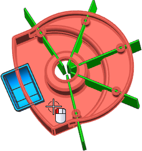
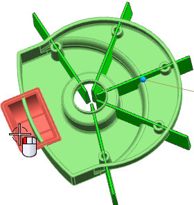

Unite two solids
-
Open des18_85_front_cover.
-
On the Feature toolbar, from the Combine Drop-down list, select Unite
 .
.
-
For the target, select the solid body as shown.

-
For the tool, select the solid body as shown.
